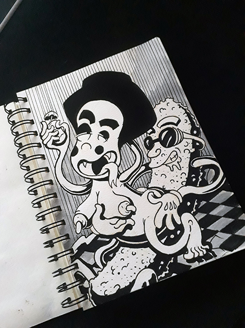
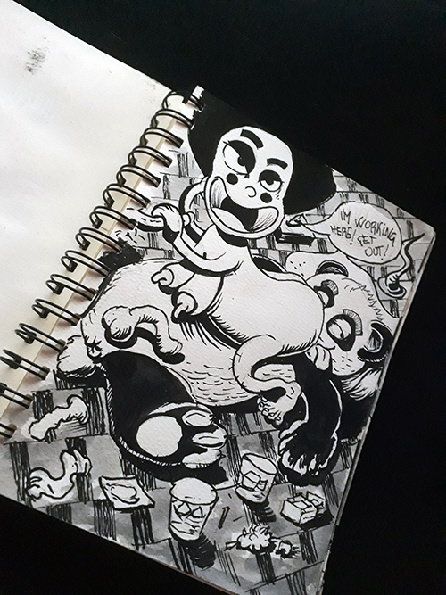
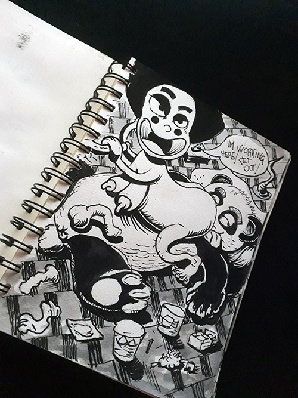
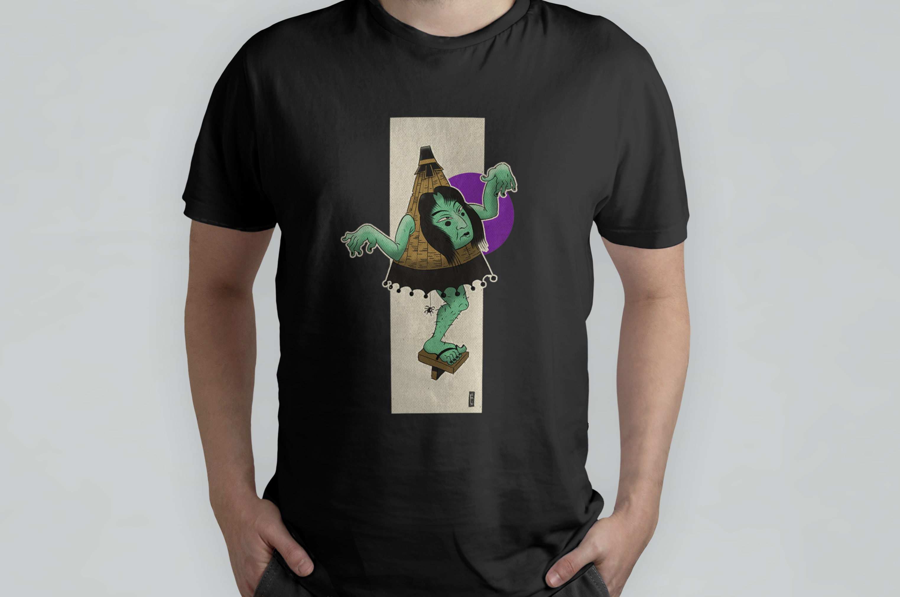
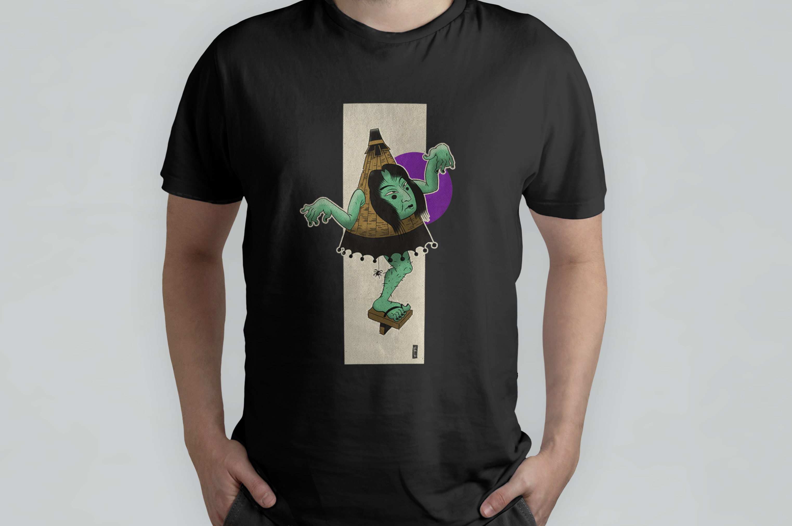

Yokai village nights
Yokai Village nace de la creación de personajes variados, basados en la cultura japonesas con una gran influencia por el arte del manga. Mis creaciones siempre buscan una historia, una personalidad, una crítica a la actual sociedad moderna ubicándola dentro de un mundo paranormal y humor bastante crudo. Así fué como después de crear a los Yokais, diseñé el personaje de kugo san. Un Aventurero que cae en Yokai Village en búsqueda de un nuevo horizonte, sin saber a donde se dirigía, se encuentra en una ciudad la cual habitan personajes bizzaros y su enamorada Lolita, la cual no puede dejar de pensar en él y constantemente lo acosa con el fin de llevarselo a la cama.
 

 
